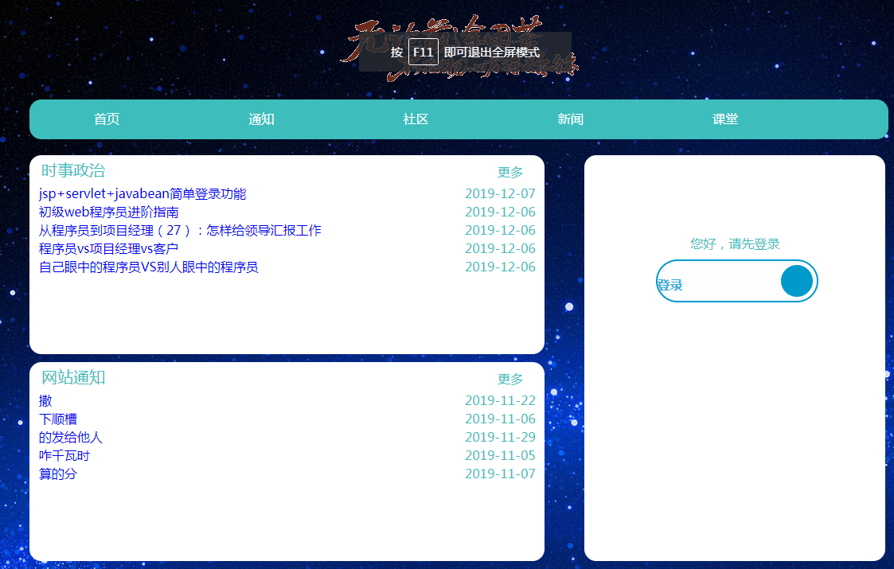
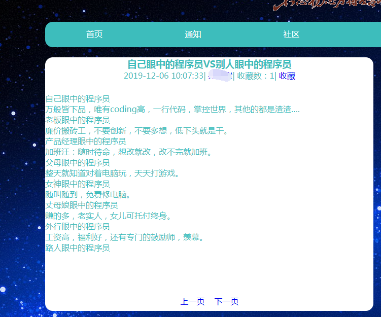
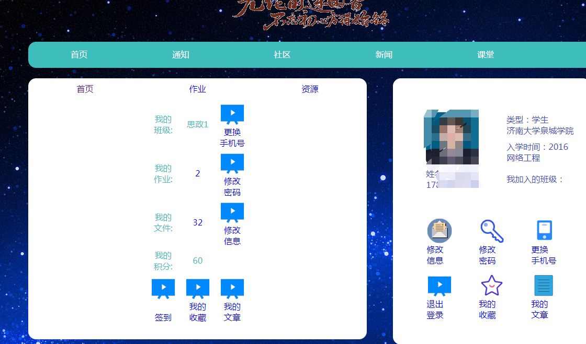
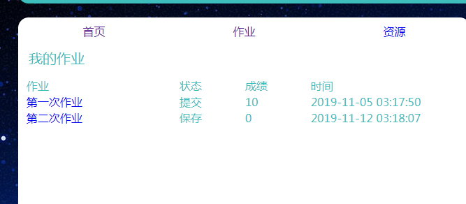
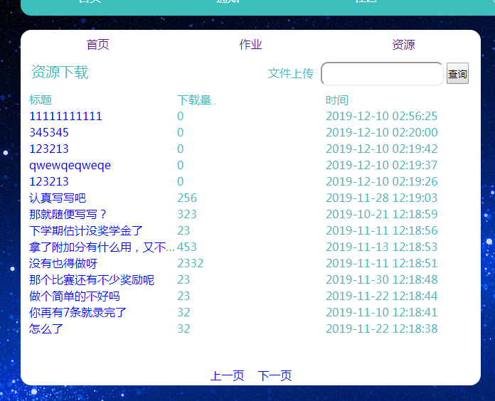
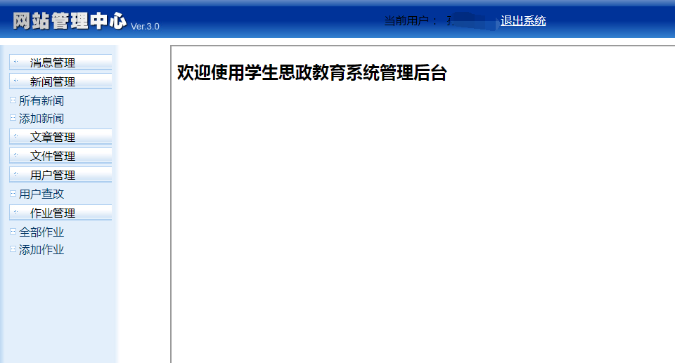

网上教学平台
大家好，我是mythSun。
很高兴能在这里和大家分享，用SS2H做的一个网上教学平台。
话不多说，直接开始。
学生在下面该玩手机的玩手机，该干嘛干嘛，
很多情况下，老师渊博的知识储备，学生是跟不上的。
比如老师讲一些名人事迹，国家的相关知识，学生其实知道的不多，
至于去查，更不可能，所以就想，能不能开发一个网站，
学生上课前只需要大致浏览一下网站，就能知道这节课老师可能涉及到的东西，
既有定向性的学习作用，又能让学生有自主学习的好的开端。
所以初期的架构设置：
分为前端（学生浏览用）、后端（教师管理用）
前端最主要的功能模块就是要闻模块、课堂模块，
休闲模块包含社区模块、通知模块、下载模块。
后端主要用于管理和信息维护，主要模块对应为前端的管理模块。
网站建设采用SS2H，毕竟开发起来方便快捷，可维护性强嘛。
源代码就不贴了，7000多行代码，全粘进来也不现实，核心代码的话也没啥核心的，都是常规操作，会点SS2H都能做。
下面是网站示意图（主要演示主要的）
首页，主要显要闻，也就是教师学生提前了解的。图中是测试数据。

当随便点开一篇文章之后，如下，涉及到信息，我给抹去了。

前端登录后，如图，界面比较简陋，因为前端不是很擅长。

点击作业后，可以看自己的作业，只有提交后，教师才可以打成绩，然后学生能看到自己的成绩。

这是附加模块，资源下载，学生可以把这个当做一个云文件存储库

后端必须登录后才能使用，设置了拦截器，一旦没有登录凭证，
会转到登录界面，防止不安全。如图是后台管理界面，也是没有认真做前端，因为前端确实不是很擅长。

后端主要就是对前台文章一类的信息维护，主要工作还是对数据库的操作。
分享到这里吧，这个后端代码还是比较规范的，如果有个好的前端，或许会更精致一些。